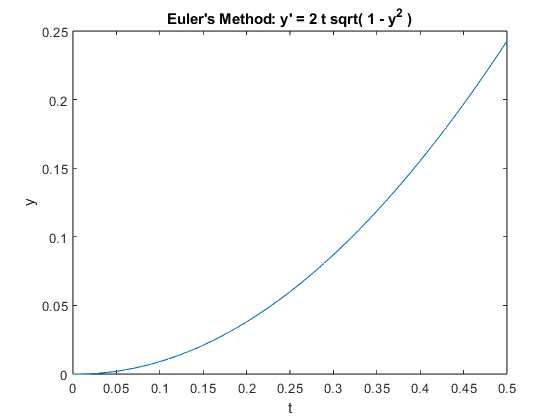

ODE Lab: Creating your own ODE solver in MATLAB
In this lab, you will write your own ODE solver for the Improved Euler method (also known as the Heun method), and compare its results to those of ode45.
You will also learn how to write a function in a separate m-file and execute it.
Opening the m-file lab3.m in the MATLAB editor, step through each part using cell mode to see the results. Compare the output with the PDF, which was generated from this m-file.
There are six (6) exercises in this lab that are to be handed in on the due date. Write your solutions in the template, including appropriate descriptions in each step. Save the .m files and submit them online on Quercus.
Contents
Student Information
Student Name: Qixian Aiden Wang
Student Number: 1008880169
Creating new functions using m-files.
Create a new function in a separate m-file:
Specifics: Create a text file with the file name f.m with the following lines of code (text):
function y = f(a,b,c) y = a+b+c;
Now MATLAB can call the new function f (which simply accepts 3 numbers and adds them together). To see how this works, type the following in the matlab command window: sum = f(1,2,3)
Exercise 1
Objective: Write your own ODE solver (using the Heun/Improved Euler Method).
Details: This m-file should be a function which accepts as variables (t0,tN,y0,h), where t0 and tN are the start and end points of the interval on which to solve the ODE, y0 is the initial condition of the ODE, and h is the stepsize. You may also want to pass the function into the ODE the way ode45 does (check lab 2).
Note: you will need to use a loop to do this exercise. You will also need to recall the Heun/Improved Euler algorithm learned in lectures.
Exercise 2
Objective: Compare Heun with ode45.
Specifics: For the following initial-value problems (from lab 2, exercises 1, 4-6), approximate the solutions with your function from exercise 1 (Improved Euler Method). Plot the graphs of your Improved Euler Approximation with the ode45 approximation.
clear all;
(a) y' = y tan t + sin t, y(0) = -1/2 from t = 0 to t = pi
%Define the function f_a = @(t,y) y*(tan(t))+(sin(t)); %Set Initial Condition t0 = 0; tN = pi; y0 = -1/2; h = 0.01; %find t & y for both methods [t_a, y_a] = ImprovedEM(f_a, t0, tN, y0, h); ode45_a = ode45(f_a,[t0, tN], y0); %Plot them plot(ode45_a.x, ode45_a.y, t_a, y_a); legend('ode45', 'Improved EM', 'Location', 'Best'); title("Solution of y' = y tan t + sin t"); ylabel('y'); xlabel('t'); %Major Differences: % If zoom in on the points near t = pi/2, there's a small divot for the IEM % graph while the ode45 graph is smooth. This is because as t approaches % pi/2, tan(t) approaches +/- infinity form left/right side. However, ode45 % does not have this issue.
(b) y' = 1 / y^2 , y(1) = 1 from t=1 to t=10
%Define the function f_b = @(t,y) 1 / (y^2); %Set Initial Condition t0 = 1; tN = 10; y0 = 1; h = 0.01; %find t & y for both methods [t_b, y_b] = ImprovedEM(f_b, t0, tN, y0, h); ode45_b = ode45(f_b,[t0, tN], y0); %Plot them plot(ode45_b.x, ode45_b.y, t_b, y_b); legend('ode45', 'Improved EM', 'Location', 'Best'); title("Solution of y' = 1 / y^2"); ylabel('y'); xlabel('t'); %Major Differences: % No major difference, however, the Improved EM plot looks smoother at the % start of the plot
(c) y' = 1 - t y / 2, y(0) = -1 from t=0 to t=10
%Define the function f_c = @(t,y) 1 - ((t * y) / 2); %Set Initial Condition t0 = 0; tN = 10; y0 = -1; h = 0.01; %find t & y for both methods [t_c, y_c] = ImprovedEM(f_c, t0, tN, y0, h); ode45_c = ode45(f_c,[t0, tN], y0); %Plot them plot(ode45_c.x, ode45_c.y, t_c, y_c); legend('ode45', 'Improved EM', 'Location', 'Best'); title("Solution of y' = 1 - t y / 2"); ylabel('y'); xlabel('t'); %Major Differences: % The improved EM looks much more smoother before t at aroud 3s. This is % because the step size (h) of the improved EM is set as 0.01, with a small % h-value, the resultant curve will be smoother.
(d) y' = y^3 - t^2, y(0) = 1 from t=0 to t=1
%Define the function f_d = @(t,y) (y^3) - (t^2); %Set Initial Condition t0 = 0; tN = 0.506; y0 = 1; h = 0.01; %find t & y for both methods [t_d, y_d] = ImprovedEM(f_d, t0, tN, y0, h); ode45_d = ode45(f_d,[t0, tN], y0); %Plot them plot(ode45_d.x, ode45_d.y, t_d, y_d); legend('ode45', 'Improved EM', 'Location', 'Best'); title("Solution of y' = y^3 - t^2"); ylabel('y'); xlabel('t'); %Major Differences: % When setting t = 1, I received a Warning: % failure at t = 5.066046e-01. Unable to meet integration tolerances % without reducing the step size below the smalled value allowed (1.776357e-15) % at time t. % The graph looked unresonable and wierd, so I changed the interval from % (t=1, t=1) to (t=0, t=0.506) so that the interval actually matches where % the solution can be graphed (not infinity). As a result, both graph are % similar except when approaching t = 0.506, the ode45 seems to approach % infinity at a higher rate of change the the improved EM.
Comment on any major differences, or the lack thereof. You do not need to reproduce all the code here. Simply make note of any differences for each of the four IVPs.
Exercise 3
Objective: Use Euler's method and verify an estimate for the global error.
Details:
(a) Use Euler's method (you can use euler.m from iode) to solve the IVP
y' = 2 t sqrt( 1 - y^2 ) , y(0) = 0
from t=0 to t=0.5.
clear all; %Define the function f = @(t,y) 2*t*sqrt(1-(y^2)); %initial condition t = 0:0.01:0.5; y0 = 0; y = euler(f,y0,t); %plot the solution plot(t, y); title("Euler's Method: y' = 2 t sqrt( 1 - y^2 )"); ylabel('y'); xlabel('t');
(b) Calculate the solution of the IVP and evaluate it at t=0.5.
% Solution: sin (t^2) fprintf('The solution at t = 0.5 = %f. \n', sin(0.5^2));
The solution at t = 0.5 = 0.247404.
(c) Read the attached derivation of an estimate of the global error for Euler's method. Type out the resulting bound for En here in a comment. Define each variable.
% E_n <= ((1 + M) * dt)/2 * (exp(M * dt * n) - 1) % E_n: the error at step n % M: M > 0 such that |f| ≤ M , |∂_t f | ≤ M , and |∂_y f | ≤ M on the % interval t = [0, 0.5] % dt: step size % n: step number or number of steps
(d) Compute the error estimate for t=0.5 and compare with the actual error.
n = length(t); M = 2; dt = 0.01; E_n = ((1 + M) * dt)/2 * (exp(M * dt * n) - 1); fprintf('For dt = 0.01, the estimated error is: %f.\n', E_n); fprintf('The actual error is: %f.\n', abs(sin(0.5^2) - y(n)));
For dt = 0.01, the estimated error is: 0.026598. The actual error is: 0.004732.
(e) Change the time step and compare the new error estimate with the actual error. Comment on how it confirms the order of Euler's method.
t = 0:0.001:0.5; n = length(t); M = 2; dt = 0.001; y = euler(f,y0,t); E_n = ((1 + M) * dt)/2 * (exp(M * dt * n) - 1); fprintf('For dt = 0.001, the estimated error is: %f.\n', E_n); fprintf('The actual error is: %f.\n', abs(sin(0.5^2) - y(n))); % Since the stepsize has been reduced to 1/10 of the previous stepsize. the % the error should also decrease with respect to the the stepsize % decreased. As shown in the displayed result, both of the new errors are 1/10 of % the previous ones.
For dt = 0.001, the estimated error is: 0.002586. The actual error is: 0.000472.
Adaptive Step Size
As mentioned in lab 2, the step size in ode45 is adapted to a specific error tolerance.
The idea of adaptive step size is to change the step size h to a smaller number whenever the derivative of the solution changes quickly. This is done by evaluating f(t,y) and checking how it changes from one iteration to the next.
Exercise 4
Objective: Create an Adaptive Euler method, with an adaptive step size h.
Details: Create an m-file which accepts the variables (t0,tN,y0,h), as in exercise 1, where h is an initial step size. You may also want to pass the function into the ODE the way ode45 does.
Create an implementation of Euler's method by modifying your solution to exercise 1. Change it to include the following:
(a) On each timestep, make two estimates of the value of the solution at the end of the timestep: Y from one Euler step of size h and Z from two successive Euler steps of size h/2. The difference in these two values is an estimate for the error.
(b) Let tol=1e-8 and D=Z-Y. If abs(D)<tol, declare the step to be successful and set the new solution value to be Z+D. This value has local error O(h^3). If abs(D)>=tol, reject this step and repeat it with a new step size, from (c).
(c) Update the step size as h = 0.9*h*min(max(tol/abs(D),0.3),2).
Comment on what the formula for updating the step size is attempting to achieve.
% The updating step size formula gets used when the abs(D) is larger than % the tolerated value. meaning that the step size is too large & the error % is too big. Thus this step size formula will continuously reduce the step % size until a small enough step size exists s.t. the produced error abs(D) % is within the tolerated value.
Exercise 5
Objective: Compare Euler to your Adaptive Euler method.
Details: Consider the IVP from exercise 3.
(a) Use Euler method to approximate the solution from t=0 to t=0.75 with h=0.025.
clear all; %Define the function f = @(t,y) 2*t*sqrt(1-(y^2)); %initial condition t = 0:0.025:0.75; y0 = 0; y = euler(f,y0,t);
(b) Use your Adaptive Euler method to approximate the solution from t=0 to t=0.75 with initial h=0.025.
y0 = 0; t0 = 0; tN = 0.75; h = 0.025; [AEM_t, AEM_y] = AdaptiveEM(f, t0, tN, y0, h);
(c) Plot both approximations together with the exact solution.
exact_t = t; exact_y = sin(t.^2); plot(t, y, 'g', AEM_t, AEM_y, 'r', exact_t, exact_y, 'b--'); title("Plot of y' = 2 t sqrt( 1 - y^2 )"); legend("Euler Method", "Adaptive EM", "Exact Solution", "Location", "Best"); ylabel('y'); xlabel('t'); % From the graph, it's obvious that Adaptive EM produce a much better % solution than the EM, the red(adaptive EM) and blue(exact solution) % lines are overlapping each other while the green line(EM) is % separated away.
Exercise 6
Objective: Problems with Numerical Methods.
Details: Consider the IVP from exercise 3 (and 5).
(a) From the two approximations calculated in exercise 5, which one is closer to the actual solution (done in 3.b)? Explain why.
% The adaptive EM is much closer to the acutal solution. Since the AEM is % able to adapt it's step size, meaning the AEM's step size can be much % smaller than the EM's step size of 0.025. Thus, creating a more acurate % solution.
(b) Plot the exact solution (from exercise 3.b), the Euler's approximation (from exercise 3.a) and the adaptive Euler's approximation (from exercise 5) from t=0 to t=1.5.
clear all; % Define function f = @(t,y) 2*t*sqrt(1-(y^2)); % Initial Conditions y0 = 0; t0 = 0; tN = 1.5; h = 0.025; t = 0:0.01:1.5; y = sin(t.^2); EM_y = euler(f,y0,t); [AEM_t, AEM_y] = AdaptiveEM(f, t0, tN, y0, h); plot(t, y, 'g', t, EM_y, 'r', AEM_t, AEM_y, 'b--'); title("Plot of y' = 2 t sqrt( 1 - y^2 )"); legend("Exact Solution", "Euler Method", "Adaptive EM", "Location", "Best"); ylabel('y'); xlabel('t');
Warning: Imaginary parts of complex X and/or Y arguments ignored.
(c) Notice how the exact solution and the approximations become very different. Why is that? Write your answer as a comment.
% When the EM and AEM reached t = sqrt(pi/2), any points beyong this t % value will have an imaginery sqrt(1-y^2) since y^2 is now greater than 1. % Since I received the warning: % Warning: Imaginary parts of complex X and/or Y arguments ignored. % Therefore, when a imaginary sqrt(1-y^2) occurs, the imaginary part will % be ignored, producing a solution different than the acutal one.